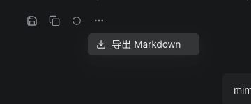

回答“更多操作”
2026-10-19 · 基线 0e4d680。相同真实对话、深色主题、1280×720 截图和消息滚动位置（scrollTop
180）。预览仅裁切操作区域，点击查看完整原图。
原菜单绝对定位在消息滚动区内，top = -36.25px。当前采用 Ant Design Dropdown 的 body
浮层，自动边界避让；同一位置的菜单 top = 8px。移除多余关闭项，保留
Escape、Tab、点击外部关闭与导出后回焦。
贴近顶部时自动向下展开

验证记录
主对话来自本地真实产品。280px 场景使用生产 ChatPanel 和固定资料、内存 IO，仅验证布局。原
Markdown 下载内容与当前回答逐字一致。